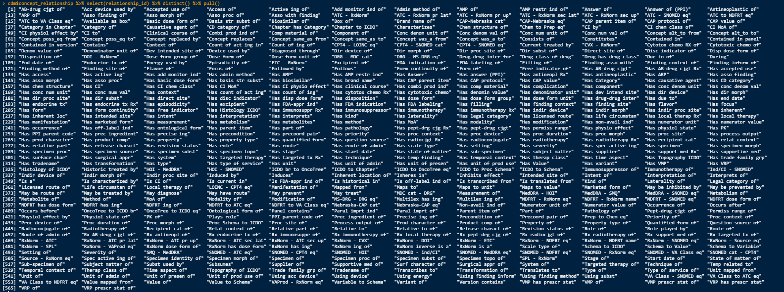

library(DBI)OMOP and CDMConnector
Introduction: The OMOP Common Data Model
Every time that someone goes to the doctor and something happens the doctors write it into their records.
Each annotation of the doctor is translated into a code, combination of letters and numbers that refers to a condition. There exist several different codding languages: SNOMED, read codes, ICD10, ICD9, RxNorm, ATC, … It depends on the region, language, type of record and others which one is used. This makes that the same condition or drug can be coded in different ways.
A compilation of these records for a group of people is what we call the medical databases. Depending on the origin and purpose of these data there are different groups of databases: electronic health records, claims data, registries… This databases can be structured by several different tables.
The Observational Medical Outcomes Partnership (OMOP) Common Data Model (CDM) is an open community data standard, designed to standardise the structure and content of observational data and to enable efficient analyses that can produce reliable evidence.
Standarisation of the data format

Mapping a database to the OMOP CDM

Mapping a database to the OMOP CDM

Mapping a database to the OMOP CDM
Standarisation of the vocabularies
From all the vocabularies OMOP CDM uses only a few as Standard: SNOMED for conditions, RxNorm for drugs, …
. . .
The process to obtain an standard code from non standard one is called mapping. We can find the mapping in the concept_relationship table.
. . .
Each one of the records in clinical data tables (condition_occurrence, drug_exposure, measurement, observation, …) will be coded by two codes:
Source concept: particular to each database, it is the
originalcode.Standard concept: equivalent code from the standard vocabulary.
Example of mapping
In concept relationship we can find different information such as:

. . .
In particular, we have the Maps to and Mapped from relations that can help us to see the mapping between codes.
Example of mapping

Example of mapping

Example of mapping

More details
. . .
For more details on how the vocabularies work you can check: Vocabulary course in EHDEN academy
. . .
All details about OMOP CDM and more can be found in: the book of ohdsi.

Connecting to a database from R (the DBI package)
. . .
Database connections from R can be made using the DBI package.
. . .
Connect to postgres:
db <- DBI::dbConnect(
RPostgres::Postgres(),
dbname = "...",
host = "...",
user = "...",
password = "..."
)Connecting to a database from R (the DBI package)
Connect to Sql server:
db <- DBI::dbConnect(
odbc::odbc(),
Driver = "ODBC Driver 18 for SQL Server",
Server = "...",
Database = "...",
UID = "...",
PWD = "...",
TrustServerCertificate = "yes",
Port = "..."
). . .
In this CDMConnector article you can see how to connect to the different supported DBMS.
Connect to eunomia
. . .
Eunomia is a synthetic OMOP database with ~2,600 individuals. It is freely available and you can download it as:
. . .
dbName <- "GiBleed"
CDMConnector::requireEunomia(datasetName = dbName)ℹ `EUNOMIA_DATA_FOLDER` set to: '/tmp/Rtmp0V9Ciw'.
Download completed!. . .
To connect to this database we are going to use duckdb
db <- DBI::dbConnect(duckdb::duckdb(), dbdir = CDMConnector::eunomiaDir(datasetName = dbName))Creating CDM database /tmp/Rtmp0V9Ciw/GiBleed_5.3.zipdb<duckdb_connection 57fa0 driver=<duckdb_driver dbdir='/tmp/Rtmp0V9Ciw/file2cd838c073d5.duckdb' read_only=FALSE bigint=numeric>>Databases organisation
. . .
Databases are organised by schemas (blueprint or plan that defines how the data will be organised and structured within the database).
. . .
In general, OMOP databases have two schemas:
cdm schema: it contains all the tables of the cdm. Usually we only will have reading permission for this schema.write schema: it is a place where we can store tables (like cohorts). We need writing permissions to this schema.
. . .
Eunomia only has a single schema (main) that will be used as cdm schema and write schema.
CDMConnector

Creating a reference to the OMOP common data model
We already know what the structure of the OMOP CDM looks like. The CDMConnector package was made to help you to quickly create a reference to the OMOP CDM data as a whole.
library(CDMConnector)- To install any of these packages that we use you can type:
install.packages("CDMConnector")in the console.
Let’s create our first cdm reference
cdm <- CDMConnector::cdmFromCon(con = db, cdmSchema = "main", writeSchema = "main")
cdm── # OMOP CDM reference (duckdb) of Synthea ────────────────────────────────────────────────────────────────────────────• omop tables: person, observation_period, visit_occurrence, visit_detail, condition_occurrence, drug_exposure,
procedure_occurrence, device_exposure, measurement, observation, death, note, note_nlp, specimen, fact_relationship,
location, care_site, provider, payer_plan_period, cost, drug_era, dose_era, condition_era, metadata, cdm_source,
concept, vocabulary, domain, concept_class, concept_relationship, relationship, concept_synonym, concept_ancestor,
source_to_concept_map, drug_strength• cohort tables: -• achilles tables: -• other tables: -Access to tables of the cdm reference
cdm$person# Source: table<person> [?? x 18]
# Database: DuckDB v1.3.0 [unknown@Linux 6.11.0-1014-azure:R 4.5.0//tmp/Rtmp0V9Ciw/file2cd838c073d5.duckdb]
person_id gender_concept_id year_of_birth month_of_birth day_of_birth birth_datetime race_concept_id
<int> <int> <int> <int> <int> <dttm> <int>
1 6 8532 1963 12 31 1963-12-31 00:00:00 8516
2 123 8507 1950 4 12 1950-04-12 00:00:00 8527
3 129 8507 1974 10 7 1974-10-07 00:00:00 8527
4 16 8532 1971 10 13 1971-10-13 00:00:00 8527
5 65 8532 1967 3 31 1967-03-31 00:00:00 8516
6 74 8532 1972 1 5 1972-01-05 00:00:00 8527
7 42 8532 1909 11 2 1909-11-02 00:00:00 8527
8 187 8507 1945 7 23 1945-07-23 00:00:00 8527
9 18 8532 1965 11 17 1965-11-17 00:00:00 8527
10 111 8532 1975 5 2 1975-05-02 00:00:00 8527
# ℹ more rows
# ℹ 11 more variables: ethnicity_concept_id <int>, location_id <int>, provider_id <int>, care_site_id <int>,
# person_source_value <chr>, gender_source_value <chr>, gender_source_concept_id <int>, race_source_value <chr>,
# race_source_concept_id <int>, ethnicity_source_value <chr>, ethnicity_source_concept_id <int>Read tables in Eunomia
. . .
Once we read a table we can operate with it and for example count the number of rows of person table.
cdm$person |>
dplyr::count()# Source: SQL [?? x 1]
# Database: DuckDB v1.3.0 [unknown@Linux 6.11.0-1014-azure:R 4.5.0//tmp/Rtmp0V9Ciw/file2cd838c073d5.duckdb]
n
<dbl>
1 2694Operation with tidyverse
If you are familiarised with tidyverse you can use any of the usual dplyr commands in you database tables.
. . .
cdm$drug_exposure |>
dplyr::group_by(drug_concept_id) |>
dplyr::summarise(number_persons = dplyr::n_distinct(person_id)) |>
dplyr::collect() |>
dplyr::arrange(dplyr::desc(number_persons))# A tibble: 113 × 2
drug_concept_id number_persons
<int> <dbl>
1 40213227 2660
2 1127433 2580
3 40213160 2140
4 1713671 2021
5 19059056 1927
6 1118084 1844
7 40213296 1737
8 40213306 1560
9 1127078 1428
10 40229134 1393
# ℹ 103 more rowsDatabase name
When we have a cdm object we can check which is the name of that database using:
. . .
CDMConnector::cdmName(cdm)[1] "Synthea". . .
In some cases we want to give a database a name that we want, this can be done at the connection stage:
. . .
cdm <- CDMConnector::cdmFromCon(
con = db, cdmSchema = "main", writeSchema = "main", cdmName = "EUNOMIA"
). . .
CDMConnector::cdmName(cdm)[1] "EUNOMIA"Create a new table
Let’s say I want to subset the condition_occurrence table to a certain rows and certain columns and save it so I can later access it.
. . .
temporary table (default):
CDMConnector::listSourceTables(cdm) [1] "care_site" "cdm_source" "concept" "concept_ancestor"
[5] "concept_class" "concept_relationship" "concept_synonym" "condition_era"
[9] "condition_occurrence" "cost" "death" "device_exposure"
[13] "domain" "dose_era" "drug_era" "drug_exposure"
[17] "drug_strength" "fact_relationship" "location" "measurement"
[21] "metadata" "note" "note_nlp" "observation"
[25] "observation_period" "payer_plan_period" "person" "procedure_occurrence"
[29] "provider" "relationship" "source_to_concept_map" "specimen"
[33] "visit_detail" "visit_occurrence" "vocabulary" . . .
cdm$my_saved_table <- cdm$condition_occurrence |>
dplyr::filter(condition_concept_id == 4112343) |>
dplyr::select(person_id, condition_start_date) |>
dplyr::compute()
CDMConnector::listSourceTables(cdm) [1] "care_site" "cdm_source" "concept" "concept_ancestor"
[5] "concept_class" "concept_relationship" "concept_synonym" "condition_era"
[9] "condition_occurrence" "cost" "death" "device_exposure"
[13] "domain" "dose_era" "drug_era" "drug_exposure"
[17] "drug_strength" "fact_relationship" "location" "measurement"
[21] "metadata" "note" "note_nlp" "observation"
[25] "observation_period" "payer_plan_period" "person" "procedure_occurrence"
[29] "provider" "relationship" "source_to_concept_map" "specimen"
[33] "visit_detail" "visit_occurrence" "vocabulary" "og_001_1748881460" Create a new table
. . .
permanent table:
cdm$my_saved_table <- cdm$condition_occurrence |>
dplyr::filter(condition_concept_id == 4112343) |>
dplyr::select(person_id, condition_start_date) |>
dplyr::compute(name = "my_saved_table", temporary = FALSE)
CDMConnector::listSourceTables(cdm) [1] "care_site" "cdm_source" "concept" "concept_ancestor"
[5] "concept_class" "concept_relationship" "concept_synonym" "condition_era"
[9] "condition_occurrence" "cost" "death" "device_exposure"
[13] "domain" "dose_era" "drug_era" "drug_exposure"
[17] "drug_strength" "fact_relationship" "location" "measurement"
[21] "metadata" "my_saved_table" "note" "note_nlp"
[25] "observation" "observation_period" "payer_plan_period" "person"
[29] "procedure_occurrence" "provider" "relationship" "source_to_concept_map"
[33] "specimen" "visit_detail" "visit_occurrence" "vocabulary"
[37] "og_001_1748881460" Create a new table
cdm── # OMOP CDM reference (duckdb) of EUNOMIA ────────────────────────────────────────────────────────────────────────────• omop tables: person, observation_period, visit_occurrence, visit_detail, condition_occurrence, drug_exposure,
procedure_occurrence, device_exposure, measurement, observation, death, note, note_nlp, specimen, fact_relationship,
location, care_site, provider, payer_plan_period, cost, drug_era, dose_era, condition_era, metadata, cdm_source,
concept, vocabulary, domain, concept_class, concept_relationship, relationship, concept_synonym, concept_ancestor,
source_to_concept_map, drug_strength• cohort tables: -• achilles tables: -• other tables: my_saved_tablecdm$my_saved_table# Source: table<my_saved_table> [?? x 2]
# Database: DuckDB v1.3.0 [unknown@Linux 6.11.0-1014-azure:R 4.5.0//tmp/Rtmp0V9Ciw/file2cd838c073d5.duckdb]
person_id condition_start_date
<int> <date>
1 263 2015-10-02
2 439 1990-03-20
3 449 1999-12-12
4 515 1961-11-14
5 17 1963-12-02
6 30 1993-03-19
7 90 1970-01-15
8 116 1959-06-11
9 137 2005-11-15
10 176 1986-10-08
# ℹ more rowsDrop an existing table
To drop an existing table:
Eliminate the table from the cdm object.
Eliminate the table from the database.
. . .
cdm <- CDMConnector::dropSourceTable(cdm = cdm, name = "my_saved_table")
cdm── # OMOP CDM reference (duckdb) of EUNOMIA ────────────────────────────────────────────────────────────────────────────• omop tables: person, observation_period, visit_occurrence, visit_detail, condition_occurrence, drug_exposure,
procedure_occurrence, device_exposure, measurement, observation, death, note, note_nlp, specimen, fact_relationship,
location, care_site, provider, payer_plan_period, cost, drug_era, dose_era, condition_era, metadata, cdm_source,
concept, vocabulary, domain, concept_class, concept_relationship, relationship, concept_synonym, concept_ancestor,
source_to_concept_map, drug_strength• cohort tables: -• achilles tables: -• other tables: -Drop an existing table
. . .
CDMConnector::listSourceTables(cdm) [1] "care_site" "cdm_source" "concept" "concept_ancestor"
[5] "concept_class" "concept_relationship" "concept_synonym" "condition_era"
[9] "condition_occurrence" "cost" "death" "device_exposure"
[13] "domain" "dose_era" "drug_era" "drug_exposure"
[17] "drug_strength" "fact_relationship" "location" "measurement"
[21] "metadata" "note" "note_nlp" "observation"
[25] "observation_period" "payer_plan_period" "person" "procedure_occurrence"
[29] "provider" "relationship" "source_to_concept_map" "specimen"
[33] "visit_detail" "visit_occurrence" "vocabulary" "og_001_1748881460" Drop an existing table
Let’s drop also the other table that we created:
cdm <- CDMConnector::dropSourceTable(cdm = cdm, name = dplyr::starts_with("og_"))
cdm── # OMOP CDM reference (duckdb) of EUNOMIA ────────────────────────────────────────────────────────────────────────────• omop tables: person, observation_period, visit_occurrence, visit_detail, condition_occurrence, drug_exposure,
procedure_occurrence, device_exposure, measurement, observation, death, note, note_nlp, specimen, fact_relationship,
location, care_site, provider, payer_plan_period, cost, drug_era, dose_era, condition_era, metadata, cdm_source,
concept, vocabulary, domain, concept_class, concept_relationship, relationship, concept_synonym, concept_ancestor,
source_to_concept_map, drug_strength• cohort tables: -• achilles tables: -• other tables: -Drop an existing table
CDMConnector::listSourceTables(cdm) [1] "care_site" "cdm_source" "concept" "concept_ancestor"
[5] "concept_class" "concept_relationship" "concept_synonym" "condition_era"
[9] "condition_occurrence" "cost" "death" "device_exposure"
[13] "domain" "dose_era" "drug_era" "drug_exposure"
[17] "drug_strength" "fact_relationship" "location" "measurement"
[21] "metadata" "note" "note_nlp" "observation"
[25] "observation_period" "payer_plan_period" "person" "procedure_occurrence"
[29] "provider" "relationship" "source_to_concept_map" "specimen"
[33] "visit_detail" "visit_occurrence" "vocabulary" Insert a table
Let’s say we have a local tibble and we want to insert it in the cdm:
cdm <- CDMConnector::insertTable(cdm = cdm, name = "my_test_table", table = cars)
cdm── # OMOP CDM reference (duckdb) of EUNOMIA ────────────────────────────────────────────────────────────────────────────• omop tables: person, observation_period, visit_occurrence, visit_detail, condition_occurrence, drug_exposure,
procedure_occurrence, device_exposure, measurement, observation, death, note, note_nlp, specimen, fact_relationship,
location, care_site, provider, payer_plan_period, cost, drug_era, dose_era, condition_era, metadata, cdm_source,
concept, vocabulary, domain, concept_class, concept_relationship, relationship, concept_synonym, concept_ancestor,
source_to_concept_map, drug_strength• cohort tables: -• achilles tables: -• other tables: my_test_tableInsert a table
CDMConnector::listSourceTables(cdm) [1] "care_site" "cdm_source" "concept" "concept_ancestor"
[5] "concept_class" "concept_relationship" "concept_synonym" "condition_era"
[9] "condition_occurrence" "cost" "death" "device_exposure"
[13] "domain" "dose_era" "drug_era" "drug_exposure"
[17] "drug_strength" "fact_relationship" "location" "measurement"
[21] "metadata" "my_test_table" "note" "note_nlp"
[25] "observation" "observation_period" "payer_plan_period" "person"
[29] "procedure_occurrence" "provider" "relationship" "source_to_concept_map"
[33] "specimen" "visit_detail" "visit_occurrence" "vocabulary" cdm$my_test_table# Source: table<my_test_table> [?? x 2]
# Database: DuckDB v1.3.0 [unknown@Linux 6.11.0-1014-azure:R 4.5.0//tmp/Rtmp0V9Ciw/file2cd838c073d5.duckdb]
speed dist
<dbl> <dbl>
1 4 2
2 4 10
3 7 4
4 7 22
5 8 16
6 9 10
7 10 18
8 10 26
9 10 34
10 11 17
# ℹ more rowsUse a prefix
It is VERY IMPORTANT that when we create the cdm object we use a prefix:
cdm <- CDMConnector::cdmFromCon(
con = db,
cdmSchema = "main",
writeSchema = "main",
writePrefix = "my_prefix_"
)
cdm── # OMOP CDM reference (duckdb) of Synthea ────────────────────────────────────────────────────────────────────────────• omop tables: person, observation_period, visit_occurrence, visit_detail, condition_occurrence, drug_exposure,
procedure_occurrence, device_exposure, measurement, observation, death, note, note_nlp, specimen, fact_relationship,
location, care_site, provider, payer_plan_period, cost, drug_era, dose_era, condition_era, metadata, cdm_source,
concept, vocabulary, domain, concept_class, concept_relationship, relationship, concept_synonym, concept_ancestor,
source_to_concept_map, drug_strength• cohort tables: -• achilles tables: -• other tables: -Use a prefix
Now when we create a new table the prefix will be automatically added:
cdm <- CDMConnector::insertTable(cdm = cdm, name = "my_test_table", table = cars)
cdm── # OMOP CDM reference (duckdb) of Synthea ────────────────────────────────────────────────────────────────────────────• omop tables: person, observation_period, visit_occurrence, visit_detail, condition_occurrence, drug_exposure,
procedure_occurrence, device_exposure, measurement, observation, death, note, note_nlp, specimen, fact_relationship,
location, care_site, provider, payer_plan_period, cost, drug_era, dose_era, condition_era, metadata, cdm_source,
concept, vocabulary, domain, concept_class, concept_relationship, relationship, concept_synonym, concept_ancestor,
source_to_concept_map, drug_strength• cohort tables: -• achilles tables: -• other tables: my_test_tableUse a prefix
CDMConnector::listSourceTables(cdm = cdm)[1] "my_test_table"cdm$my_test_table# Source: table<my_prefix_my_test_table> [?? x 2]
# Database: DuckDB v1.3.0 [unknown@Linux 6.11.0-1014-azure:R 4.5.0//tmp/Rtmp0V9Ciw/file2cd838c073d5.duckdb]
speed dist
<dbl> <dbl>
1 4 2
2 4 10
3 7 4
4 7 22
5 8 16
6 9 10
7 10 18
8 10 26
9 10 34
10 11 17
# ℹ more rowsUse a prefix
DO NOT use the prefix to drop tables, you only care about the prefix at the connection stage!
cdm <- CDMConnector::dropSourceTable(cdm = cdm, name = "my_prefix_my_test_table")
CDMConnector::listSourceTables(cdm = cdm)[1] "my_test_table"Use a prefix
cdm── # OMOP CDM reference (duckdb) of Synthea ────────────────────────────────────────────────────────────────────────────• omop tables: person, observation_period, visit_occurrence, visit_detail, condition_occurrence, drug_exposure,
procedure_occurrence, device_exposure, measurement, observation, death, note, note_nlp, specimen, fact_relationship,
location, care_site, provider, payer_plan_period, cost, drug_era, dose_era, condition_era, metadata, cdm_source,
concept, vocabulary, domain, concept_class, concept_relationship, relationship, concept_synonym, concept_ancestor,
source_to_concept_map, drug_strength• cohort tables: -• achilles tables: -• other tables: my_test_tableUse a prefix
DO NOT use the prefix to drop tables, you only care about the prefix at the connection stage!
cdm <- CDMConnector::dropSourceTable(cdm = cdm, name = "my_test_table")
CDMConnector::listSourceTables(cdm = cdm)character(0)Use a prefix
cdm── # OMOP CDM reference (duckdb) of Synthea ────────────────────────────────────────────────────────────────────────────• omop tables: person, observation_period, visit_occurrence, visit_detail, condition_occurrence, drug_exposure,
procedure_occurrence, device_exposure, measurement, observation, death, note, note_nlp, specimen, fact_relationship,
location, care_site, provider, payer_plan_period, cost, drug_era, dose_era, condition_era, metadata, cdm_source,
concept, vocabulary, domain, concept_class, concept_relationship, relationship, concept_synonym, concept_ancestor,
source_to_concept_map, drug_strength• cohort tables: -• achilles tables: -• other tables: -Consistency rules
We use compute() to compute the result into a temporary (temporary = TRUE) or permanent (temporary = FALSE) table.
If it is a temporary table we can assign assign it to where I want for example:
cdm$my_custom_name <- cdm$person |>
dplyr::compute(). . .
If it is a permanent table we can only assign it to the same name:
error:
cdm$my_custom_name <- cdm$person |>
dplyr::compute(name = "not_my_custom_name", temporary = FALSE)Error in `[[<-`:
! You can't assign a table named not_my_custom_name to my_custom_name. Please use compute to change table name.. . .
no error:
cdm$my_custom_name <- cdm$person |>
dplyr::compute(name = "my_custom_name", temporary = FALSE)Consistency rules
Omop names are reserved words, e.g. we can not assign a table that is not the person table to cdm$person.
. . .
cdm$person <- cdm$drug_exposure |>
dplyr::compute(name = "person", temporary = FALSE)Error in `newOmopTable()`:
! gender_concept_id, year_of_birth, race_concept_id and ethnicity_concept_id are not present in table person. . .
cdm$drug_exposure <- cdm$drug_exposure |>
dplyr::rename("my_id" = "person_id") |>
dplyr::compute(name = "drug_exposure", temporary = FALSE)Error in `newOmopTable()`:
! person_id is not present in table drug_exposure